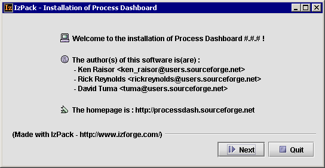
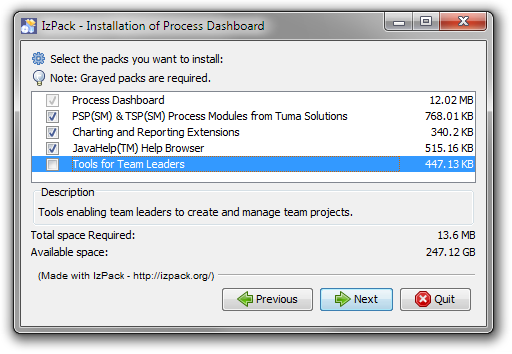
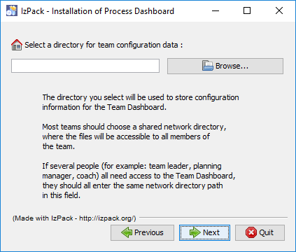
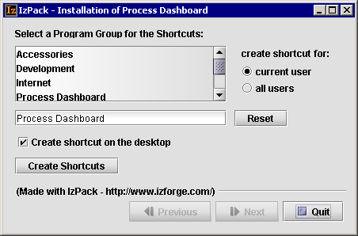

Install Process Dashboard
If you have installed the dashboard in the past, you do not
need to uninstall. Just run the new installer and choose the default values
for all prompts, and it will upgrade you to the latest version.
Run the installation program by following the steps
described below:
Installing on Windows
- To begin the installation process:
- If you downloaded an EXE file for installing the dashboard,
double-click on that file.
- If you have a CD-ROM containing the software, insert it into your
computer. The installation process may start automatically. If it
does not start automatically, double-click the setup.exe
file on the CD-ROM.
- If you have a ZIP file containing the software, unzip it and
double-click the extracted file setup.exe.
- The Process Dashboard requires Java to run. If Java has not already
been installed on your computer, the EXE installer will display an error
message; in this case, visit http://processdash.com/java to download Java.
(The CD-ROM and ZIP packages include a Java installer, and will launch it
automatically if needed.) When the Java installer runs, you can choose the
default values for each prompt.
- The Process Dashboard installer will
open:

- You may accept the default values for each prompt. When you reach
the page asking which packs you wish to install, team leaders and
process mentors should select the "Tools for Team Leaders"
option. Individual team members do not need to select
this option unless they need a Team Dashboard shortcut icon.

- The installer will allow you to select a directory where personal
metrics data will be stored. You may accept the default value.
Note: if you are upgrading the dashboard from an earlier version,
and you previously chose to place your personal data in some other
location, make certain that location is correctly displayed in this field.
If the directory is incorrect and you neglect to edit it, you can run the
installer a second time to set the data location correctly.
- Team leaders and process mentors will be prompted to identify a directory
where team configuration information will be stored. Enter the path to the
Team Configuration Directory, which the team
leader created earlier.

- At the end of the installation, you will be given the opportunity
to create shortcuts for starting the Process Dashboard. Choose the
appropriate options and click Next.

This will create application shortcuts for
your use:
- A Process Dashboard shortcut will always be created,
which allows you to manage your own personal data. (Even team
leaders and process mentors will typically have some project tasks
assigned to them; they should use this personal dataset to
perform that work.)
- Team leaders and process mentors will also receive a Team
Dashboard shortcut, which allows you to manage rolled-up team
data. Clicking this shortcut will launch a team dataset.
- If you are a coach or process mentor who needs to access the dashboard for
several different teams, just rename your Team Dashboard shortcut to something
unique (such as "ABC Team Dashboard"). Then run the installer again, choose
the Tools for Team Leaders option, and enter the Team Configuration Directory
for the next team when prompted. In the final step, the installer will create
a shortcut called "Team Dashboard" for this second team, which you can rename
to something unique and descriptive (such as "XYZ Team Dashboard"). You can
repeat this process for as many teams as needed.
Installing on Mac OS X
Installing the Process Dashboard on Mac OS X requires a slightly
different process.
- To begin the installation process:
- If you downloaded an JAR file for installing the dashboard,
double-click on that file.
- If you have a CD-ROM or ZIP file containing the software, find the
file inside called pdash-install-*-#_#_#.jar. It will
be in a data subdirectory, and the file will contain an
actual version number rather than #_#_#). Double-click on
that file.
- Follow the installer directions as described in the section above.
- An icon will be created in the Applications folder for the
Process Dashboard. (If you chose to install the Tools for Team Leaders
option, a Team Dashboard shortcut will be created as well.)
Installing on Unix/Linux
Installing the Process Dashboard on Unix requires a few
additional steps.
- Make certain Java is installed on your computer, by typing
"which java" at a shell prompt. If Java is not installed,
you can download it from http://processdash.com/java or use an appropriate
package manager.
- Obtain the JAR file for installing the Process Dashboard. (If you have
a CD-ROM or ZIP file containing the software, find the file inside called
pdash-install-*-#_#_#.jar. It will be in a data
subdirectory, and the file will contain an actual version number rather
than #_#_#). At a shell prompt, change to the directory
containing that file, and type:
java -jar pdash-install-*.jar
- The Process Dashboard installer will appear.
- Follow the installer directions as described in the section above.
- The Process Dashboard installer will attempt to create shortcuts that
you can use to launch the application. However, due to the variety of
window managers on Unix platforms, the installer may not always be
able to create shortcuts:
- If it cannot create shortcuts, the installer will create
draft shell scripts that you may use to launch the Process
Dashboard. In the directory you designated as your data
directory (defaults to ~/.pspdata), you will find the
file run-dash.sh. In the directory you designated as your
team configuration directory, you will also find a file
called run-dash.sh. (These launch two different
dashboard datasets; see the section
above for an explanation of the two datasets.) Review the
contents of these scripts; in particular, you may wish to uncomment
and edit the line that adds java to
the executable path. For convenience, you may wish to manually
create icons/shortcuts for launching the dashboard.